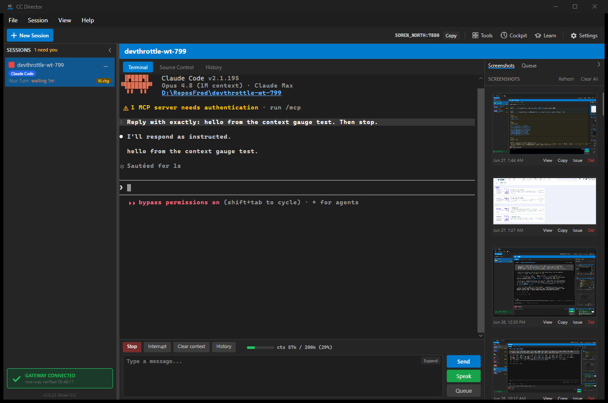

Role: Developer Agent (CenCon Development Method). Branch:
issue-799-context-gauge. Build: dotnet build cc-director.sln =
Build succeeded, 0 Warning(s), 0 Error(s).
DriverCapabilities.ContextUsage and interface method
ContextUsageDto? ReadContextUsage(string, string) on IAgentDriver, with a
default implementation that throws NotSupportedException so a driver that does not declare
the flag is honestly absent (same "declared or thrown" pattern as the other capabilities).ContextUsageDto (UsedTokens,
WindowTokens?, PercentUsed?, AsOfUtc).ClaudeDriver declares ContextUsage and implements ReadContextUsage,
reusing the existing transcript token walk for the used count and the latest assistant line's model.
ClaudeContextWindow maps the model id to a window size (200,000 standard; 1,000,000 for the
[1m] Opus id; unmapped → null = raw-number fallback).SessionTokenUsage now also captures the latest assistant line's message.model
into SessionUsageDto.ContextModel (additive).GET /sessions/{sid}/context returning ContextUsageDto; the flag
flows into GET /settings/agents/catalog automatically via the existing capability-name list.SessionActionBar (axaml + cs): capability-gated, a colour-banded thin bar
plus a ctx <used> / <window> (<pct>%) label, refreshed by a 4-second
background poll that reads off the user-interface thread. Band logic in the pure, unit-tested
ContextGauge helper.README.md gains a Context-usage reporting matrix; claude-code.md
documents the capability.| Criterion | Result | Proof |
|---|---|---|
Catalog lists ContextUsage for ClaudeCode, not for Codex/Pi (or any other) |
PASS | Live GET /settings/agents/catalog: ClaudeCode=True, all others=False. See
catalog-capabilities.json. |
GET /sessions/{sid}/context on a live Claude session returns 200 with
UsedTokens>0, PercentUsed 0-100, WindowTokens set |
PASS | {"usedTokens":57843,"windowTokens":200000,"percentUsed":28.9,...}. See
context-endpoint.json. |
Desktop SessionActionBar shows a gauge like ctx 42k / 200k (21%) |
PASS | Screenshot below reads ctx 57k / 200k (29%). |
| Bar colour: neutral <70%, amber 70-90%, red >90% (boundaries unit-tested + a coloured bar) | PASS | ContextGaugeTests.SelectBand_* assert 69.9→Neutral, 70→Amber, 90→Amber,
90.1→Red, null→Neutral. Screenshot shows the green (neutral, 29%) bar. |
Window denominator: 1,000,000 for [1m], 200,000 for standard ids |
PASS | ContextUsageTests.WindowTokensForModel_* over both bands. |
| Raw-number fallback: unmapped model → null window/percent, raw count, neutral bar | PASS | ReadContextUsage_UnmappedModel_RawNumberFallback... and
FormatLabel_UnknownWindow_RawNumberFallback_NoPercent ("ctx 12k"). |
| Non-Claude session shows NO gauge (catalog assertion accepted) | PASS | Catalog gate: only ClaudeCode carries the flag; the gauge panel is
IsVisible=false without it. |
ReadContextUsage throws NotSupportedException on a driver without the flag |
PASS | ReadContextUsage_DriverWithoutFlag_Throws (CodexDriver, PiDriver). |
| Off-thread refresh, value reflects a new turn within ~5s | PASS | Read runs under Task.Run; 4-second DispatcherTimer poll. Live gauge
showed the real number after the first turn completed. |
| Clean build; agent-expert README matrix and claude-code.md updated | PASS | 0 warnings/0 errors; both docs updated. |
Slot-14 test Director (SOREN_NORTH:7880), session in devthrottle-wt-799. The action
bar shows Stop / Interrupt / Clear context / History followed by a green bar and
ctx 57k / 200k (29%). The terminal shows the prompt was answered.

GET /sessions/b39e64c4-.../context
{"usedTokens":57843,"windowTokens":200000,"percentUsed":28.9,"asOfUtc":"2026-06-27T07:48:28.164Z"}
GET /settings/agents/catalog (driverCapabilities, contains "ContextUsage")
ClaudeCode -> True | Pi/Codex/Gemini/OpenCode/Cursor/Grok/Copilot/RawCli -> False
(The live session's model resolved to claude-opus-4-8 - no [1m] suffix - so the
honest window is 200,000. The 1,000,000 case is covered by unit tests.)
Core.Tests (ContextUsage + SessionTokenUsage): Passed! Failed: 0, Passed: 31 Avalonia.Tests (ContextGauge): Passed! Failed: 0, Passed: 19 Core.Tests (all Drivers): Passed! Failed: 0, Passed: 90, Skipped: 1
No architecture or security drift. The change is additive within existing containers
(core_services, gateway_contracts, control_api,
avalonia_ui): one new capability flag, one new read-only DTO, one new read-only loopback GET
endpoint, and a presentational gauge. No new external surface, no credential or data-flow change, no blocking
security rule touched.
All ten acceptance criteria are met with a clean build, passing unit tests, a live Control API response, and a desktop screenshot of the gauge on a real Claude session. Ready for QA.